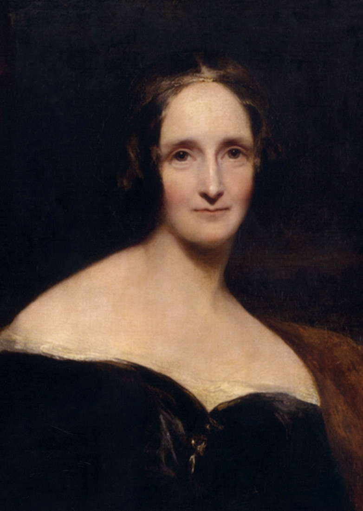

Sappho (610-570 BCE)
“Someone will remember us / I say / Even in another time.”
Born on the Greek island of Lesbos (the origin of the term “lesbian”), Sappho (the origin of the term “sapphic”) is best known for her poetry depicting her love for other women.
Sappho was a lyric poet who blended her local dialect with the “epic” vocabulary seen in works like Homer’s. Her work was so well-known in Ancient Greece that Plato and other scholars praised her and she was given the nickname “The Tenth Muse” in reference to the Greek myth of the nine Muses. She tended to write about her personal life and community as opposed to politics or current events. Aphrodite was Sappho’s favored deity, and she led a small religious gathering of women called a thiasos focused on education, singing, dancing, and poetry that looked to her for inspiration.
Many of Sappho’s works are lost to time: only one, Ode to Aphrodite, is complete.
Maya Angelou (1928-2014)
“My mission in life is not merely to survive, but to thrive; and to do so with some passion, some compassion, some humor, and some style.”
Born in St. Louis, Angelou was an author, poet, and actress recognized for her contributions in media to the point of being awarded the Presidential Medal of Freedom in 2011.
One of Angelou’s most famous writings is I Know Why the Caged Bird Sings, her first autobiographical work. She wrote multiple more, which continue to chronicle her difficult childhood. While her books are a large part of her fame, she also performed in many plays, wrote a television series about African culture in American life, and wrote a movie titled Georgia, Georgia. She later acted in movies, several television shows, and a Broadway play.
Though Angelou was not college-educated, she was often called “Dr. Angelou” and became a professor of American studies at Wake Forest University.
Frida Kahlo (1907-1954)
“I am my own muse, I am the subject I know best. The subject I want to know better.”
Kahlo was a Mexican painter known for her self-portraits and self-taught surrealist-esque style. Daughter of a Hungarian-German and a Spanish-Native, Kahlo found much to examine in her identity. This and her interest in art born during an extended hospital stay at 18 after a bus accident led to her first painting: a self-portrait, the first of many.
Kahlo was well-known in her lifetime: her home with husband Diego Rivera (which consisted of two spaces connected by a bridge) was frequented by other artists and political activists, one being Surrealist André Breton, who wrote the introduction for the brochure of her first solo exhibition. Kahlo went on to show her work in Paris, the Louvre, and Mexico, among other places.
Kahlo’s childhood home, La Casa Azul in Mexico, is now a museum dedicated to her life and art.
Anne Frank (1929-1945)
“How wonderful it is that nobody need wait a single moment before starting to improve the world.”
Frank is known for her writings during the two years she spent in hiding with her family in Nazi-occupied Amsterdam. Frank’s father took Frank, her sister Margot, and her mother to the Netherlands early into Hitler’s Nazi regime, when Frank was only four. In 1941, however, Germany occupied the country, and Frank was forced to attend a Jewish school instead of a public one at 12 years old.
Less than a month after her 13th birthday, when she received the diary that would hold her writings, Frank went into hiding with her family and four others after Margot was called to a forced-labor camp. Frank wrote daily for two years, stopping only three days before their “secret annex” was discovered by the Gestapo on August fourth, 1944. Frank and Margot perished in Bergen-Belsen the next year, but their father later found Frank’s diary among the papers the Gestapo left behind. The diary was published in 1947--and translated into more than 65 languages, made into a play and movie, and republished in 1995 with edited-out writings restored.
Frank was named in Time’s 1999 list of The Most Important People of the Century.
Mary Shelley (1797-1851)
“Beware; for I am fearless, and therefore powerful.”
Shelley’s famous novel, Frankenstein, or The Modern Prometheus, is known as one of the first examples (if not the first example) of science-fiction.
Daughter of philosopher William Godwin and writer and feminist activist Mary Wollstonecraft, Shelley might have been expected to have a robust education--however, her mother died shortly after her birth, and Godwin’s new wife Mary Jane Clairmont saw little reason to educate Shelley over her two biological children.
Shelley was never formally educated, but read constantly thanks to her father’s vast collection of books. She was often found reading, daydreaming, and writing near her mother’s grave. Frankenstein began at the suggestion of poet Lord Byron while Shelley was on a Switzerland retreat with other writers: after a group reading of ghost stories, Byron proposed that they all try writing horror. Shelley’s attempt, which she finished at 19, is now the origin of multiple movies and other derivative works.
Murasaki Shikibu (978-1014)
“There are as many sorts of women as there are women.”
Shikibu is known for her work The Tale of Genji, said to be the world’s oldest full novel.
While little is known about Shikibu (even her name is said to be a pseudonym), it is recorded that she was born into the noble Fujiwara family. She was well-educated to the point of learning Chinese, which at the time was allowed only to men.
While Genji is also enjoyed purely as a fictional work, it attracts interest especially because it gives insight into life at the court of the empress Shōshi, who Shikibu served.
Shikibu taught Chinese to Empress Shōshi, and she was considered to be a companion-tutor to the young noble.